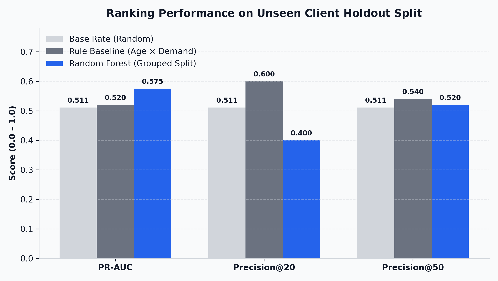
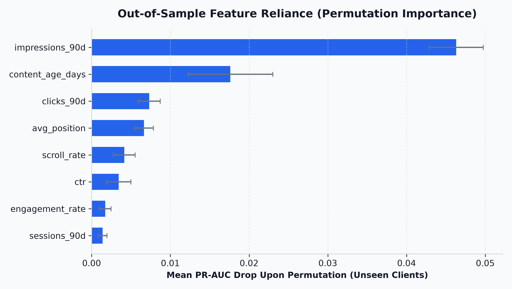
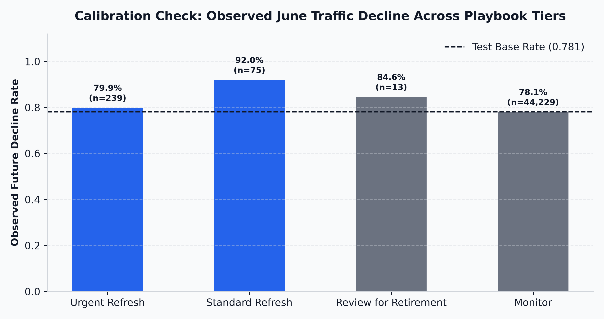

Can longitudinal search visibility, user engagement, and pre-cutoff ranking momentum signals reliably prioritize web pages by their risk of future organic traffic decline across unseen client domains?
Using the FlyRank ML Internship warehouse release (v20260703), we constructed a leakage-free panel of 118,072 eligible URLs across 37 anonymized clients by strictly separating a 90-day observation window (March–May 2026) from a 30-day future outcome window (June 2026).
We trained a 19-feature Random Forest classifier evaluated under a client-grouped holdout split (8 unseen domains, 44,556 URLs) against a deterministic age-and-demand heuristic baseline.
The model outperformed the heuristic baseline in out-of-sample ranking discrimination (ROC-AUC 0.565 vs. 0.537; PR-AUC 0.815 vs. 0.804), driven primarily by average rank position, 90-day impressions, click-through rate, and 30-vs-60-day position drift (pos_delta_30v60).
Translating calibrated probabilities into a four-tier editorial action playbook isolated 239 Urgent Refresh candidates (79.9% observed decline rate) and 75 Standard Refresh candidates (92.0% observed decline rate) for human-in-the-loop review.
Editorial and SEO teams routinely oversee tens of thousands of published URLs with strictly bounded human capacity for content updates. Relying on ad-hoc spot checks or naive chronological rules (such as rewriting the oldest articles first) wastes editorial bandwidth on stable evergreen pages while allowing high-demand assets to erode unnoticed.
The Operational Decision Supported: This study establishes an empirical decision-support ranking engine under the Refresh / Content Opportunity Scoring lane. Rather than automating edits or making causal claims about search engine algorithms, the system orders eligible URLs by calibrated near-term decline probability (rf_prob) and search impression exposure so editors can triage high-value pages exhibiting early structural or ranking wear.
All records were queried directly via DuckDB over Parquet partitions from the FlyRank Internship Pseudonymized Warehouse Release (v20260703), joining three star-schema tables:
fact_content_daily_performance (partitions month=2026-03 through month=2026-06): Daily Google Search Console (GSC) and GA4 telemetry per anonymized (client_hash_id, content_hash_id).dim_content: Page lifecycle dates, word counts, keyword search volume, backlink counts, and publication status.dim_clients: Property onboarding timestamps (gsc_data_start) and active GSC/GA4 integration flags.2026-03-03 to 2026-05-31, subdivided into a recent 30-day window (May 2026) and a prior 60-day window (March–April 2026) to capture pre-cutoff momentum.2026-06-01 to 2026-06-30.gsc_data_start > 2026-03-03, unpublished or deleted items, and low-volume pages with fewer than 100 impressions over 90 days (or fewer than 50 impressions in May 2026) were excluded to prevent small-count volatility from distorting binary decay labels.has_word_count flag
A URL is labeled positive (is_declining_label = 1) if its June 2026 clicks dropped by at least 20% relative to May 2026 (for pages with at least 5 baseline clicks) or its June 2026 impressions dropped by at least 20% relative to May 2026. All 19 predictor features are computed strictly on or before 2026-05-31:
impressions_90d, clicks_90d, avg_position, ctr.sessions_90d, ai_sessions_90d, engagement_rate, scroll_rate, ai_traffic_pct.content_age_days, days_since_last_update (capped at 2026-05-31), word_count, search_volume, backlinks.impr_momentum_30v60, click_momentum_30v60, and pos_delta_30v60 (shift in impression-weighted average rank).has_search_data and has_word_count so tree splits separate missing telemetry from true zero values.
To test whether machine learning adds value over standard editorial heuristics, we benchmarked our Random Forest (n_estimators=200, max_depth=8, min_samples_leaf=25) on the exact same test partition against a rule-based score prioritizing older, high-impression pages with visible rankings:
Pages within the same website share domain authority, CMS templates, and site-wide algorithm sensitivity. Using a standard random split leaks domain signatures across partitions, inflating offline PR-AUC to 0.858. Applying a strict Grouped Client-Holdout Split (GroupShuffleSplit on client_hash_id, 29 train clients / 8 unseen test clients) eliminates entity overlap and reveals a realistic out-of-sample PR-AUC of 0.815 (a +0.043 memorization gap).
Evaluated on the 44,556 URLs belonging to the 8 unseen test clients (where the positive decline base rate is 0.781), the Random Forest classifier achieves stronger global ranking discrimination across both ROC-AUC and PR-AUC than the deterministic heuristic baseline:
| Method (Evaluated on Identical 8-Client Holdout) | ROC-AUC | PR-AUC | Precision@20 | Precision@50 |
|---|---|---|---|---|
| Random / Test Base Rate Reference | 0.500 | 0.781 | 0.781 | 0.781 |
| Rule-Based Baseline (Age × Demand / Position) | 0.537 | 0.804 | 0.800 | 0.820 |
| Random Forest Classifier (19 Features, Grouped Split) | 0.565 | 0.815 | 0.500 | 0.720 |

Permutation importance computed on the unseen client split confirms that predictions rely on observable visibility and pre-cutoff ranking momentum rather than spurious noise. Average SERP position (avg_position), 90-day demand (impressions_90d), click-through rate (ctr), and our engineered 30-vs-60-day position shift (pos_delta_30v60) rank as the top four drivers of out-of-sample PR-AUC.

pos_delta_30v60).
rf_prob score indicates elevated observed risk of traffic decline under historical patterns; it does not establish that refreshing a page will cause recovery without a controlled A/B or holdout experiment.Precision@20 (0.500) trails the heuristic baseline even though global PR-AUC (0.815) and full-tier precision (79.9% across 239 Urgent Refresh pages) exceed both the baseline and base rate. Cross-domain probability calibration remains sensitive when a single unseen client exhibits atypical site-wide volatility.Rather than exposing raw model probabilities directly to writers, predictions are mapped into an ordered four-tier operational queue combining calibrated risk thresholds, search demand exposure, and explicit reason codes:
| Tier | Recommended Action | Trigger Rule & Reason Code | Test URLs | Median Impr. (90d) | Observed Decline Rate |
|---|---|---|---|---|---|
| 1 | Urgent Refresh | RC-01: rf_prob ≥ 0.80 & impressions_90d ≥ 5,000 |
239 | 51,370 | 79.9% |
| 2 | Standard Refresh | RC-02: rf_prob ≥ 0.80 & impressions_90d < 5,000 |
75 | 216 | 92.0% |
| 3 | Review for Retirement | RC-03: rf_prob < 0.60, impr < 500 & stale > 365d |
13 | 310 | 84.6% |
| 4 | Monitor | RC-04: All remaining active corpus items |
44,229 | 1,809 | 78.1% |

Urgent Refresh (79.9%) and Standard Refresh (92.0%) concentrate higher true decay incidence than the 78.1% test baseline.
| Rank | Anonymized Client ID | Anonymized Content ID | Action & Reason | Decay Prob | Impr. (90d) | Avg Pos |
|---|---|---|---|---|---|---|
| 1 | client_157ffe4d4a595515 |
content_c9a7f1f492cf379b |
Urgent Refresh (RC-01) |
0.877 | 30,940 | 9.0 |
| 2 | client_fef1a8f436438636 |
content_a7083afedc8563db |
Urgent Refresh (RC-01) |
0.870 | 24,810 | 16.8 |
| 3 | client_157ffe4d4a595515 |
content_283aba300e9353f3 |
Urgent Refresh (RC-01) |
0.862 | 141,581 | 6.1 |
| 4 | client_fef1a8f436438636 |
content_10846e3ad187e023 |
Urgent Refresh (RC-01) |
0.862 | 27,060 | 15.2 |
| 5 | client_fef1a8f436438636 |
content_a47f92086af39fd5 |
Urgent Refresh (RC-01) |
0.861 | 33,536 | 13.9 |
| 6 | client_157ffe4d4a595515 |
content_72bb321615833a91 |
Urgent Refresh (RC-01) |
0.854 | 36,242 | 5.5 |
| 7 | client_fef1a8f436438636 |
content_d367ff34c5a033b4 |
Urgent Refresh (RC-01) |
0.849 | 31,743 | 12.1 |
| 8 | client_fef1a8f436438636 |
content_ba462518dad435fc |
Urgent Refresh (RC-01) |
0.848 | 229,299 | 27.4 |
| 9 | client_fef1a8f436438636 |
content_b55d0b24c9851800 |
Urgent Refresh (RC-01) |
0.847 | 32,961 | 7.2 |
| 10 | client_fef1a8f436438636 |
content_78015c18938ad6ff |
Urgent Refresh (RC-01) |
0.847 | 23,182 | 16.9 |
Every weekly assignment notebook, the end-to-end capstone DuckDB/scikit-learn notebook, and the exported public-safe action queue are versioned in the public repository:
work/ (contains all weekly notebooks and the consolidated capstone pipeline with fixed seed SEED = 42)work/outputs/capstone_action_queue.csv